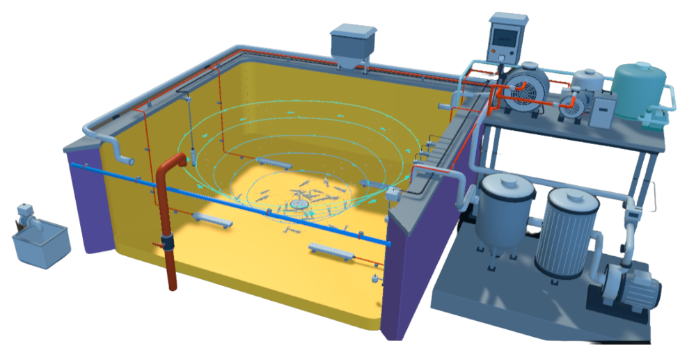

Aquaculture Growth Optimization System
IoT-enabled water quality monitoring and automated aeration for Philippine aquaculture. Protect stock from midnight oxygen crashes 24/7.

Pond farming without continuous telemetry leaves entire harvests vulnerable to nocturnal phytoplankton respiration crashes.
Loss incurred in just one unnoticed 3-hour dawn oxygen drop.
Local relays trigger paddlewheels within 0.5s of an oxygen drop, even with cell towers down.
Aerators power down automatically when natural afternoon photosynthesis peaks water DO.
Alerts sent directly to basic caretaker cellphones and smartphone apps simultaneously.
Optical luminescence sensors measure water non-destructively with no chemical test kits to buy.
A seamless loop from underwater telemetry to on-site relays and your mobile phone.
Submerged optical dissolved oxygen and digital temperature probes scan the pond continuously. Optical luminescence eliminates electrolyte refilling.
When dissolved oxygen drops below your calibrated threshold, industrial 30A contactors trigger aerators instantly. Runs offline logic with zero cloud delay.
View live graphs, adjust aeration thresholds, and override motors remotely. Emergency loud sound alarms and SMS alerts ring if values drift.
Resistant to corrosive salinity, high ambient humidity, and rural provincial power brownouts.
Older galvanic sensors consume electrolyte fluid and require frequent membrane replacements. AGOS uses optical blue/red luminescent lifetime probes that require only a simple bi-weekly freshwater rinse.
Directly switch up to 3HP paddlewheel motors or submersible fountain pumps without burning external relays.
Zero reliance on cloud internet. If local cell towers go down during heavy typhoons, your pond relays trigger locally without any pause.
Engineered for remote provincial hatcheries. Operates seamlessly on 220V grid power or off-grid 12V/24V solar battery setups with zero brownout disruption.
Interlocks with automatic feeders to disburse feed only when water DO and temperature support optimal fish digestion, minimizing feed waste.
One-click download of daily DO, temperature, and feeding logs to certify sustainable practices for Landbank agricultural loans.
From standalone IoT automated sensor nodes to turnkey high-density raceway civil engineering.
The core IoT edge controller designed specifically for tropical fish and shrimp ponds. Includes submersible optical DO and pH probes, industrial 30A motor relays, cellular telemetry, and emergency caretaker siren output.
Turn open earthen ponds into high-density In-Pond Raceway Systems with water velocity controls for 3x to 5x higher harvest capacity.
Micro-bubble aeration providing twice the oxygen transfer efficiency of conventional splashers, consuming up to 40% less horsepower.
Continuous sludge channels that extract unconsumed feed and fish manure before it decomposes into toxic ammonia gas.
Tailored packages engineered for different scales of farm management and governance.
Growers of Tilapia, Bangus, and Vannamei Shrimp focused on eliminating midnight mass mortality, optimizing feed conversion, and cutting monthly electricity expenses.
Municipal Agriculture Offices implementing food security projects, communal hatchery upgrades, and verifiable BFAR-funded agritech livelihood grants.
Farmer cooperatives seeking bulk equipment volume discounts, shared sensor calibration loaners, synchronized harvests, and joint cold storage logistics.
Choose between low-barrier harvest leases, outright equipment ownership, or seasonal telemetry.
Complete hardware ownership for your farm balance sheet or government grant funding.
No large upfront capital barrier. Pay a predictable operational fee per 4-month crop cycle.
Pay only for active stocking months with zero off-season charges during pond drying.
We protect your harvest every day with ongoing technical care, guaranteed loaner probes, and direct caretaker support.
Technicians in Camarines Norte and Luzon ready for on-site wiring, contactors, and hardware checkups within 24 to 48 hours.
Free immediate replacement probes provided during scheduled sensor calibration so water telemetry never pauses.
Emergency phone, SMS, and Viber hotline staffed by engineers fluent in Tagalog and Bicolano to assist caretakers directly.
Continuous remote monitoring of solar battery voltages, probe optical noise, and GSM signal health to prevent farm interruptions.
Monitor dissolved oxygen levels, water temperature, and acidity from anywhere. Receive instant sound alarms and SMS alerts when water quality shifts.
Clear answers about rural power, sensor durability, and species support.
Get your farm automated in three straightforward milestones.
Fill out our inquiry form or send us a message with your farm location, pond count, and stocked species.
Our agritech specialists review your power access, water circulation, and relay points to provide a tailored quote.
We mount the node, connect aerator relays, calibrate sensors, and train farm caretakers in Tagalog or Bicolano.
Tell us about your ponds and our technical team will get back to you within 24 hours.